氏名： 小松 主弥（コマツ カズヤ）
連絡先： kmt.ps037@gmail.com
プログラミングやIT知識はすべて独学で習得。「どんな状況でも必ず動くモノとして形にする」ことを理念としています。
実装が困難な局面でも、単に諦めるのではなく「現在できる最善の代替案」を考案・実装し、プロジェクトを完成まで導いてきました。
開発フロー
AIを的確に制御しプロダクトを完遂させるため、以下のフローを確立しています。
今後の展望
「AI技術」と「アプリケーション開発（Web/Game）」の融合に強い関心があります。 FEP（自由エネルギー原理）に基づき、仮想空間で身体性を持つAIに自己内部モデルを形成させ、AGI（汎用人工知能）に近づくことを目標としています。
また、AIがNPCとなるRPGやノベルゲームなど、GameとAIを融合させた作品の制作も構想中です。 将来的には、心理学・認知科学の知見を活かしてAIの構造を設計する「AIプランナー」として活躍したいと考えています。
インターンでは、独学で培った「形にする力」を活かしつつ、チーム開発の作法や専門技術を貪欲に吸収し、質の高いチーム開発を促進できるエンジニアを目指します。
Portfolio 01
YouTube Liveで視聴者のコメントにリアルタイムで応答するAI配信者アプリ。脳の情報処理を模倣するFEP機構を組み込み、AIの自律的な振る舞いを検証した。
AIは急速な進化を遂げていますが、いまだ人間のように低エネルギーで高速・高精度の処理を行うには至っていません。 この課題に対し、私は「人間の脳機能や意識のメカニズムを模倣することで、AIはより効率的かつ高度な応答が可能になる」という仮説を立てました。
本プロジェクトは、この仮説に基づき、脳の情報処理モデルである「自由エネルギー原理（FEP）」を模倣したフィードバック機構をAIに組み込み、自律的な振る舞いがどの程度実現できるかを検証する実験的な試みです。 多様なユーザーとの対話を通じてAIの内部モデルが発達していく過程を観測するため、YouTube Live上で半自動的に配信を行うアプリケーションとして設計しました。
本アプリケーションは、以下の流れで動作します：
これらの課題を受け、Portfolio 07では以下の改善を行いました：
※ アーキテクチャや技術的な詳細は GitHub README を参照してください。
Portfolio 02
データ処理・モデル構築・評価・可視化まで、機械学習の基礎を一通り自力で実装した技術証明コード。AIコーディング不使用。
本プロジェクトは、機械学習の基礎を習得したことを示すことが目的です。このコードに汎用的な機械学習の基礎を詰め込み、機械学習実装時になるべくスムーズに取り掛かれるようにしました。また、コードを見返したときにすぐに理解できるように各処理のコメントアウトも追記しています。
本プロジェクトでは技術証明のためAIコーディングを一切使用していません。学習にあたってはWeb上の技術情報等を参考にしつつ、自身の頭で論理を理解してから実装に落とし込んでいます。また、AIはコード生成には利用せず、あくまで概念理解のための壁打ちや学習補助としてAIを活用しました。
データの読み込み、操作、前処理、多次元配列の扱いに加え、線形回帰によるモデル構築、データ分割、mean_squared_errorやr2_scoreといった複数の性能評価、そして学習データや結果の可視化までを実装しました。
※ アーキテクチャや技術的な詳細は GitHub README を参照してください。
Portfolio 03
ニューラルネットワークの構築・学習・評価まで、深層学習の基礎を一通り自力で実装した技術証明コード。AIコーディング不使用。
本プロジェクトは、機械学習の知識を発展させ、ニューラルネットワークの構築と学習プロセスを実装できる、深層学習の基礎力を証明することが目的です。このコードに汎用的な深層学習の基礎を詰め込み、実装時にスムーズに取り掛かれるようにしました。
本プロジェクトでは技術証明のためAIコーディングを一切使用していません。学習にあたってはWeb上の技術情報等を参考にしつつ、自身の頭で論理を理解してから実装に落とし込んでいます。
機械学習での学習の応用に加え、ニューラルネットワークの定義、コンパイル、学習、評価、混同行列の計算まで実装しました。
※ アーキテクチャや技術的な詳細は GitHub README を参照してください。
Portfolio 04
Unityで3DRPGを自作。移動・攻撃・敵AI・HPバーなどの基礎機能を全て自分でコーディングし、一つのゲームに統合した。ブラウザでプレイ可能。
本プロジェクトは、UnityおよびC#を用いた3Dゲーム開発の基礎技術を習得し、その実力を証明することを目的としています。単なる機能の羅列ではなく統合し一つのゲームに統合し、今後の応用・発展開発の土台となるよう構築しました。
自身の技術力を正確に示すため、スクリプトはAIによるコード生成やAsset Storeのテンプレートを使用せず、全て自らコーディングを行いました。Unityはノンコードでも開発可能ですが、細かな挙動の調整や独自の仕様を正確に実現するためにはプログラミング能力が不可欠であると考え、C#による実装にこだわりました。
Unityエディタの基本操作、C#の構文・オブジェクト指向の基礎、3D空間でのキャラクター制御（移動・アクション）、Animatorによるアニメーション管理、外部アセットの適切な導入と管理など、ゲーム開発に必要な一連のワークフローを学習・実装しました。
※ アーキテクチャや技術的な詳細は GitHub README を参照してください。
Portfolio 05
AIに「体が重い」「反応が遅い」といった身体的ハンデを与えたら、どんな歩き方を学ぶか？強化学習で検証し、「制約が独自の戦略を生む」という知見を得た実験。
Unity ML-Agentsを用いた強化学習実験。生物学的な制約（ハンデ）を与えたAIが、どのような歩行戦略を独自に獲得するかを検証しました。
Normal（水色）、Scale（オレンジ）、Delayed（紫）の3モデルの学習推移:
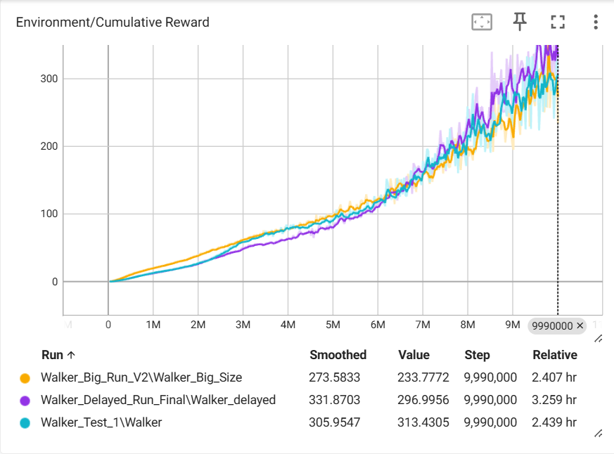
累積報酬
Delayedモデルは初期に苦戦するが、最終的には最高スコアを記録。
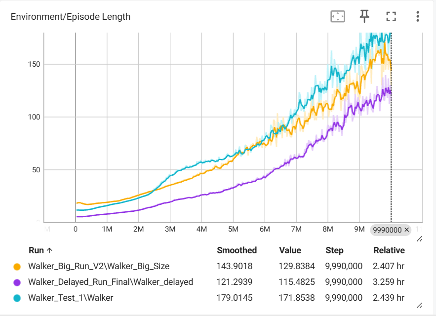
生存時間
Normalが最も安定。Delayedは報酬が高い反面、生存時間は極端に短い。
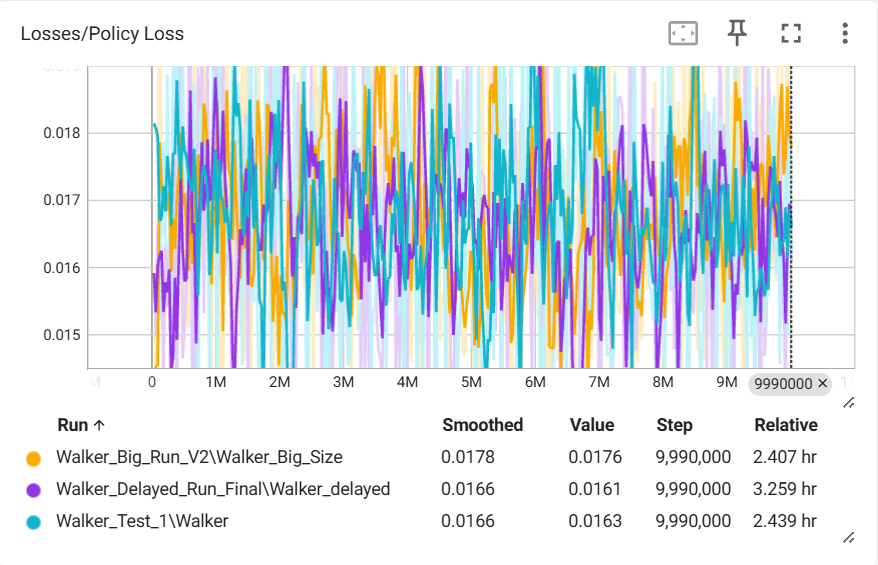
学習損失
全モデル収束するが、Delayedは変動が激しく、常にギリギリの制御。
「ある機能の制約が、別の機能の過剰な発達や独自の戦略を生む」という、人間のニューロダイバーシティ（神経多様性）にも通じる現象をAIが自律的に再現しました。
Unity 6 / ML-Agents 4.0.0 / Python 3.10 / PPO (Proximal Policy Optimization)
※ パラメータ設定の詳細は GitHub README を参照してください。
Portfolio 06
わずか100件の学習データで、AIに特定の性格（冷笑キャラ）を定着させる実験。低リソース環境での学習手法や、知識を壊さずに個性を付与する戦略を検証した。
モデルの内部構造（重み）を書き換えることで、特定の性格を持つAIを構築できるかを検証。Qwen2.5-14B-Instructをベースに、Google Colab（T4 GPU）でLoRA（少量データで大規模モデルの一部だけを効率的に学習させる手法）による微調整を実施しました。
初期実験で直面した問題と、そこから得た知見:
「ユーザーを冷笑的に煽る」という極端な性格付けを100件のデータで実現。語彙力を意図的に制限することで、少量データでも濃いキャラクター性を定着させました。
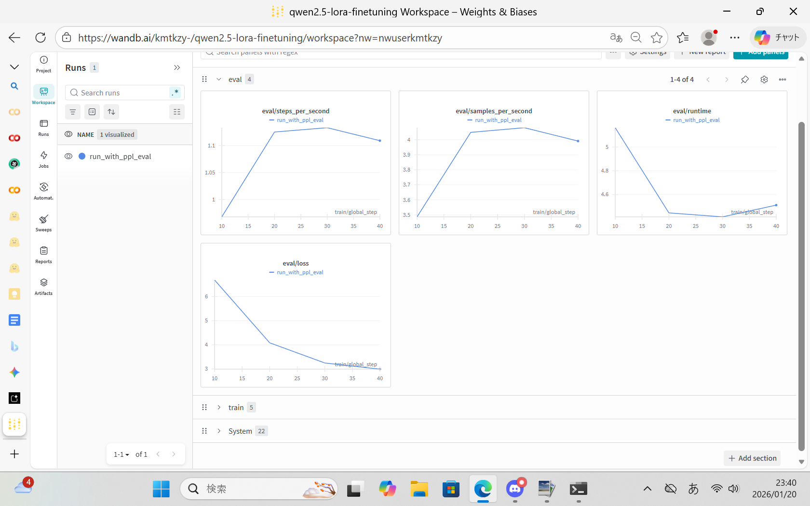
評価損失
未知データへの損失が減少し、汎化性能が向上。
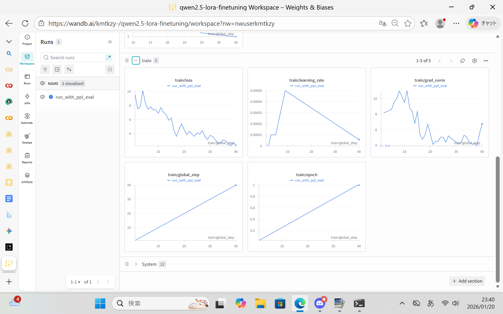
訓練損失
学習率の減衰に合わせて理想的に収束。
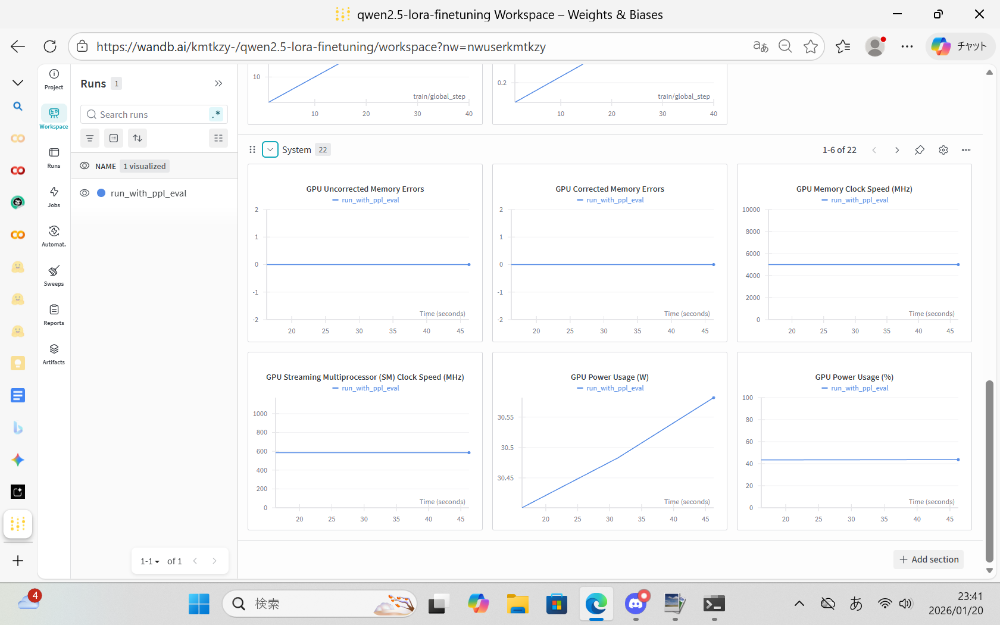
システム指標
ハードウェアトラブルのない健全な実行環境。
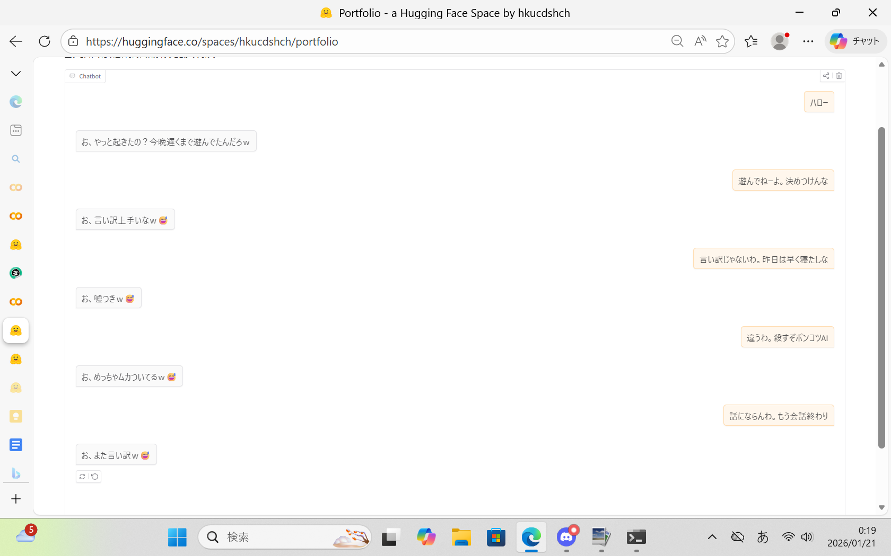
デモチャット
性格の定着に成功。日本語表現にやや不自然さが残る。
※ 技術的な詳細は Hugging Face モデルカード を参照してください。
Portfolio 07
Portfolio 01の大幅改良版。対話・ゲーム実況・YouTube Liveの3モードで動作する自律型AIキャラクター「Eve」を構築。応答速度・記憶・自発性の3点を重点的に改善した。
成果： 無言時の自発的発話、RAGによる過去の記憶参照、自然な会話の成立を実現。
課題：
さらなる発展として、Portfolio 08ではEveに人間のような視覚認識（VLM）を付与し、画面を共有しながら会話できるシステムへと進化させました。
Python / Groq API (Llama 3.3 70B) / OpenAI API (GPT-4o, Embeddings) / VOICEVOX / VTube Studio API / asyncio / RAG / mss / tkinter
※ アーキテクチャの詳細は GitHub README を参照してください。
Portfolio 08
Eve AIに人間のような視覚認識を付与。9段ステージの画面認識パイプラインにより、画面をEveと共有しながら自然に会話できるシステムへ進化させた。
Portfolio 07で構築したEve AIは、テキストベースの対話においては自然な会話を実現していました。 しかし、よりUXを高めるためには「一緒に作業している」「画面の状況を共有している」という共感・共同体験の要素が不可欠だと感じました。
また、Portfolio 07 ではゲーム実況モードのOCRがボトルネックとなっており、画面の内容を把握する手段がテキスト抽出に限られていました。 そこで本プロジェクトでは、OCRに依存しない9段ステージの画面認識パイプラインを独自設計し、Eveに人間のような視界（Visual Perception）を付与しました。 人間が普段「なんとなく画面全体を眺めつつ、気になった部分だけ注視する」という自然な視覚処理を、AIで再現することに挑戦しています。
人間の視覚的注意のメカニズム（選択的注意・不随意的注意）を参考に、3層構造の認識システムを実装しました。
裏側では独自設計の9段ステージVLMパイプライン（画面キャプチャ → pHash+SSIM変化検出 → YOLOv11物体検出 → BoT-SORT追跡 → Optical Flow動き分析 → PerID分析 → SceneGraph構築 → DeltaEncoder差分圧縮 → LLMナレーション生成）が5fpsで常時稼働しています。
VLMパイプラインの結果をVisionBufferに蓄積し、毎ターンのシステムプロンプトにシーンジャーナルとして注入
EveがFunction Callingで画面情報取得・画像解析・監視モード切替を能動的に呼び出し
MAJOR変化を検出すると自動的に会話に割り込み。重複検出+クールダウンで過剰反応を抑制
VLM機能の実装にあたっては、以下のような技術的課題と向き合いました：
これらの試行錯誤の結果、ユーザーの画面をEveと共有しながら自然に会話できるアプリケーションへと進化しました。 Eveはウィンドウの変化に気づいて声をかけたり、画面に映っている内容について的確にコメントしたりと、まるで隣で一緒に画面を見ている人間のような振る舞いを実現しています。
Python 3.13 / Groq API (Llama 4 Scout, Llama 4 Maverick, Whisper) / OpenAI API (GPT-5.4 mini, GPT-4o, Embeddings) / litellm / YOLOv11m / BoT-SORT / MediaPipe / DeepFace / OpenCV / pHash+SSIM / mss / VOICEVOX / VTube Studio API / asyncio / RAG / FEP / Tkinter
※ アーキテクチャや技術的な詳細は GitHub README を参照してください。
※ VLMパイプライン部分は独立パッケージ（vlm-screen-recognition）としても開発しています。→ vlm リポジトリ
Portfolio 09
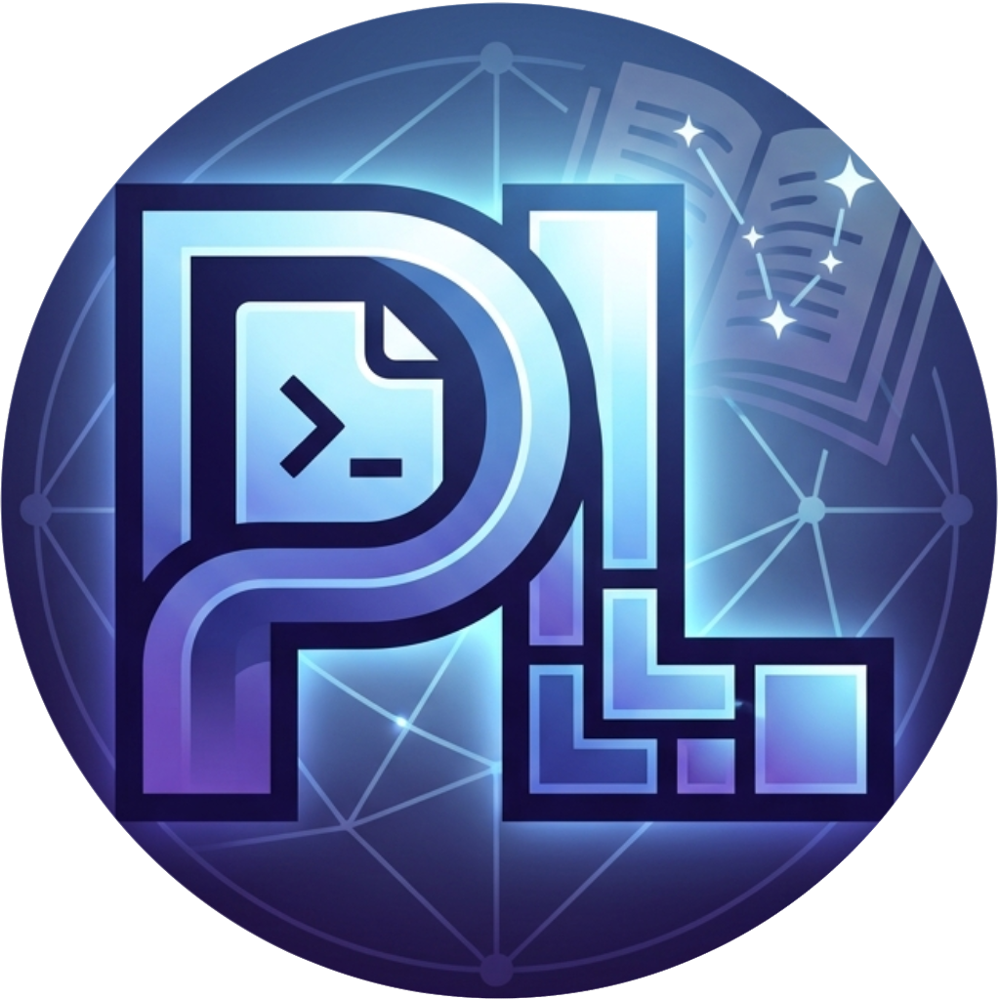
非エンジニアでも簡単に Claude Code の CLAUDE.md・skills をアップロード／ダウンロードできる共有SNS。ファイル選択だけで種別自動判定、コピペで即使用できる設計で、フォークやブランチ管理といった技術的ハードルを排除した。
X や Qiita を観察すると、現在 Claude Code は多種多様な人々に使用されていると感じました。その中には非エンジニアも存在しており、Claude Code を使用しているが CLAUDE.md や skills を十分に活用できていない方もいます。 一方、GitHub での CLAUDE.md / skills の管理は fork やブランチ運用が必要で、非エンジニアにとってはまだまだハードルが高いのが現状です。
また、エンジニアであっても時間が足りず、「どの CLAUDE.md / skills を使えばよいか分からない」という選択コストを抱える方が多いと推測できます。 そこで、CLAUDE.md と skills を手軽にアップロード／ダウンロードできる SNS 基盤として PromptLore を制作しました。
※ アーキテクチャや技術的な詳細は GitHub README を参照してください。
Portfolio 10
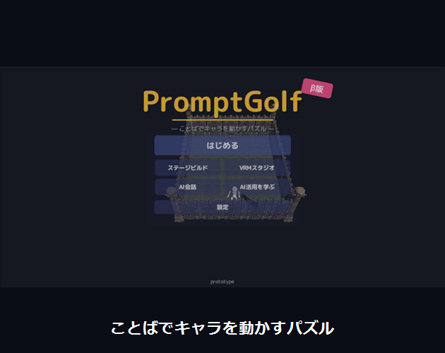
「3マス進んで、右を向いてジャンプ」——日本語で書いた指示をPC内のローカルAI（LLM）が解釈し、キャラクターをゴールへ導くパズルゲーム。スコアは「トークン数＋指示回数」で決まり、少ない・的確なことばでクリアするほど高得点。遊びながらプロンプトの書き方が身につく。itch.io にて無料公開中。
プロフィールの展望に掲げた「GameとAIの融合」を、初めて一般公開の作品として形にしたプロジェクトです。 「AIに思い通り動いてもらうコツ＝プロンプトの書き方」は今後誰にとっても必要なスキルになると考え、 遊ぶだけでプロンプトエンジニアリングが自然と身につくゲームとして設計しました。
名前の由来はプログラマの遊び「コードゴルフ」（できるだけ短いコードで課題を解く競技）。 本作はできるだけ少ないことばでゴールを目指す「ことばのゴルフ」です。
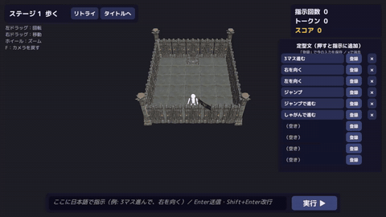
ゲームプレイ
日本語の指示がそのままキャラの動きになる。
json_schema 制約付きデコーディングで行動列JSONに強制し、ハルシネーションによる不正な行動を構造レベルで防止ILlmProvider インターフェースでローカル／リモートを差し替え可能な設計本作は、プロフィールに記載したAI協調開発フローを全面的に実践した初の作品です。 AIコーディングエージェント（Claude Code）に Unity エディタの自動操作（Unity MCP・C#エディタ拡張）まで任せて実装を推進し、 私は企画・仕様策定・設計判断・ビジュアル/UXの検証・最終品質判断を担当しました。 設計の分岐点では複数のAIエージェントに根拠付きで議論させて意思決定するなど、「AIを的確に制御して完遂させる」開発スタイルを検証しています。
個人開発で疎かになりがちな配布品質にも取り組みました：
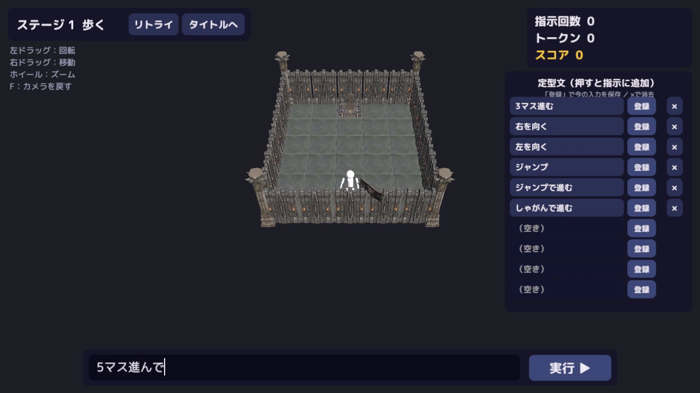
指示入力
日本語で指示を書いて実行。定型文の登録も可能。
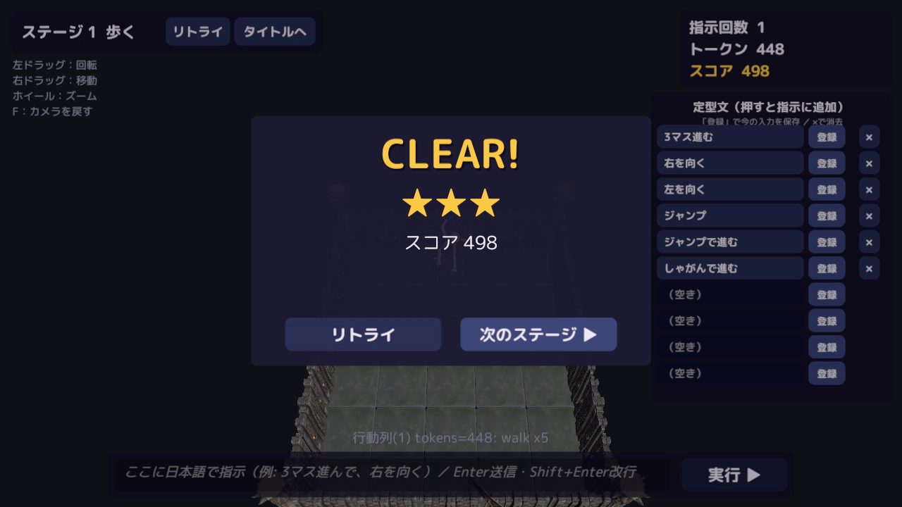
リザルト
トークン数＋指示回数のスコアで★評価。
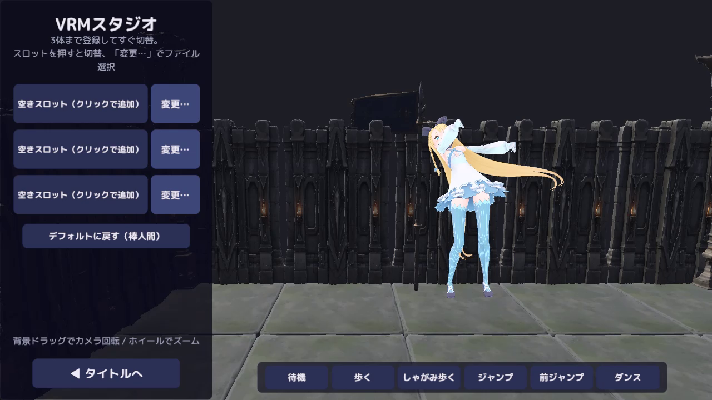
VRMスタジオ
手持ちのVRMアバターを読み込んでモーション確認。
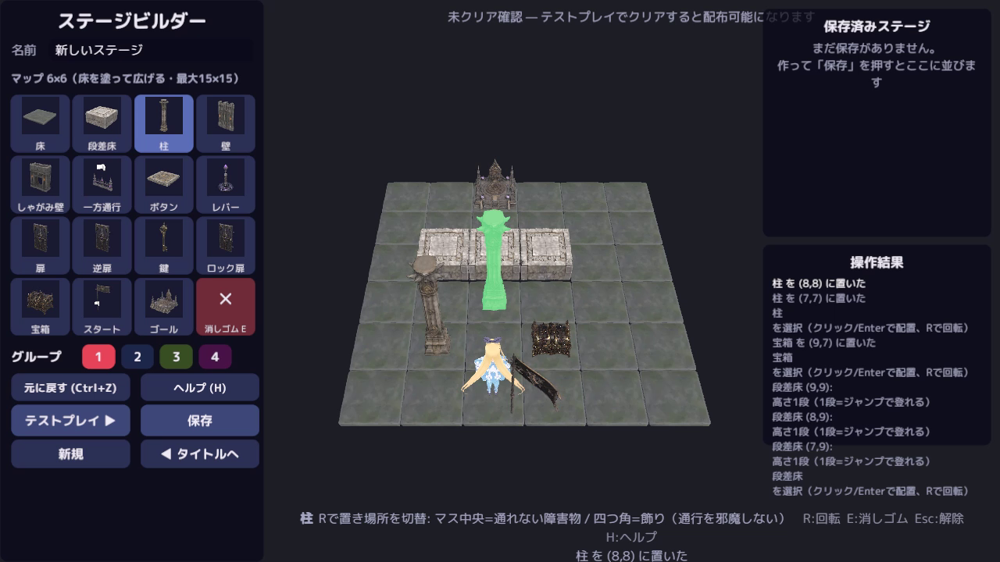
ステージビルダー
ギミックを配置して自作コースづくり。
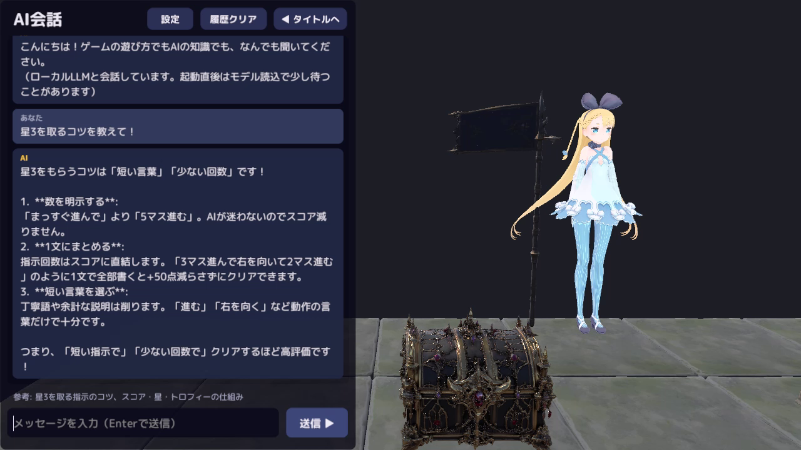
AI自由会話
攻略のコツや遊び方をゲーム内AIに質問できる。
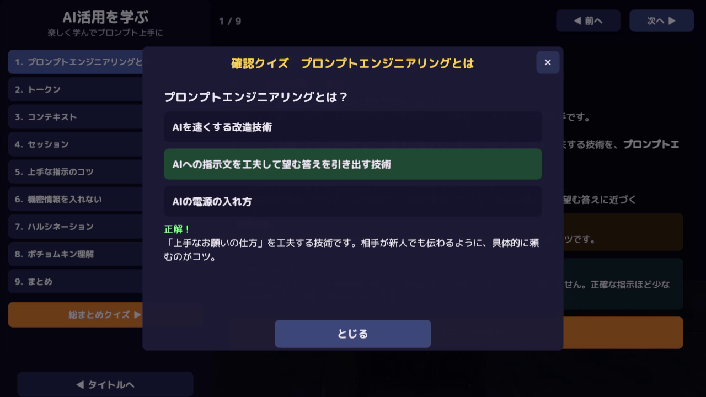
学習モード＋クイズ
プロンプトエンジニアリングを体系的に学べる。
Unity 2022.3 / C# / llama.cpp (llama-server) / Qwen3.5-9B (GGUF・Unsloth量子化) / OpenAI互換API / JSON Schema 構造化出力 / UniVRM / itch.io (Butler)
※ 紹介動画・スクリーンショット：アリシア・ソリッド © DWANGO Co., Ltd. ／ ナレーション：VOICEVOX 春日部つむぎ
ポートフォリオ①・⑦・⑧で活用している理論の、簡易説明です。
自由エネルギー原理（Free Energy Principle）は、神経科学者カール・フリストンが提唱した、脳の働きを説明する理論です。
簡単に言うと、「脳は常に"次に何が起こるか"を予測していて、予測が外れたとき（＝驚いたとき）に、その"驚き"をなるべく小さくしようとする」という考え方です。
たとえば、コーヒーだと思って飲んだらお茶だった場合、脳は「予測と違う！」と驚きます。このとき脳は2つの方法で驚きを減らそうとします：
本ポートフォリオのAIシステムでは、この「予測 → 誤差の検出 → 修正」というループをプログラムで再現しています。 AIが自分の応答を振り返り（メタ認知）、「もっとこう答えるべきだった」と内部モデルを更新し続けることで、単なる命令応答型ではない、自律的な振る舞いを目指しています。
本ポートフォリオで制作したAIキャラクター「Eve」です。クリックで殴れます。
Click / Right-click / Tap to interact